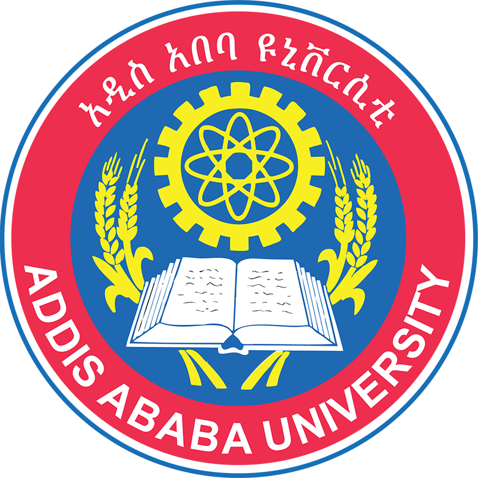
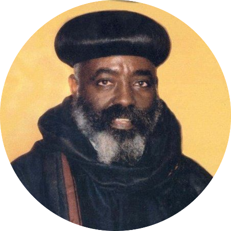

Hi, I'm Natnael Habteselassie, and I'm a third-year Software Engineering student from Addis Ababa, Ethiopia. I enjoy any type of problem solving and web development. For me there's nothing better than taking an idea and turning it into a neat and functional program. With a solid academic background and hands-on coding experiences, I always aim to improve my software designing skills.
Over the years, I've worked on some projects some from my university courses and some by myself. Some of them are MiniGit, a custom version control system built in C++ that supports branching, merging, and commit history, it was inspired by how Git works internally. I also developed a Text Processing tool on Ethiopian Language Pairs, a Python-based research tool that analyzes the linguistic similarities between Amharic and Tigrigna using phonetic and word-level analysis. Academically, I've completed courses in Python programming, object-oriented programming, discrete mathematics, networking, data structures and algorithms, and fudamentals of database from Addis Ababa University — giving me a strong foundation for full-stack and software problem solving.
Outside of coding I enjoy playing video games and table tennis, both of which were my hobies since I was a kid. I'm currently working on my JavaScript and React skills and learning some interesting software engineering topics in AAU. My long term goal is to collaborate with innovative and philanthropic teams and contribute to software projects that create real-world value by solving real problems.
Education

Addis Ababa University
BSc in Software Engineering (2023 - Present)
I joined Addis Ababa University in 2023. Originally, I was planning to pursue medicine - it had been my dream for years. But when I was on campus, I started getting curious about engineering. I was always interested to know how things work behind the scenes and i had a pretty much good background in math, so I decided to know more about engineering. As a result, of that I became more and more interested in software engineering. which was the most competitive programs at AAU. But with a GPA of 3.96, I was fortunate enough to qualify. Right now, I'm in my third year. It hasn't been easy, it is definitely challenging but it's also been incredibly rewarding. And most importantly i have discovered a deep passion for problem solving, building things with code, and understanding how software can solve real-world problems.

Abune Gorgorios School
Primary & High School
I attended Abune Gorgorios School for both my primary and high school education. I performed very well throughout those years and i had a strong academic record. When I graduated I was awarded a gold medal for academic excellence which was a very proud moment for me because it was reflection of the hard work I put in during those years and the discipline and study habits I built there continue to support me today as a university student.